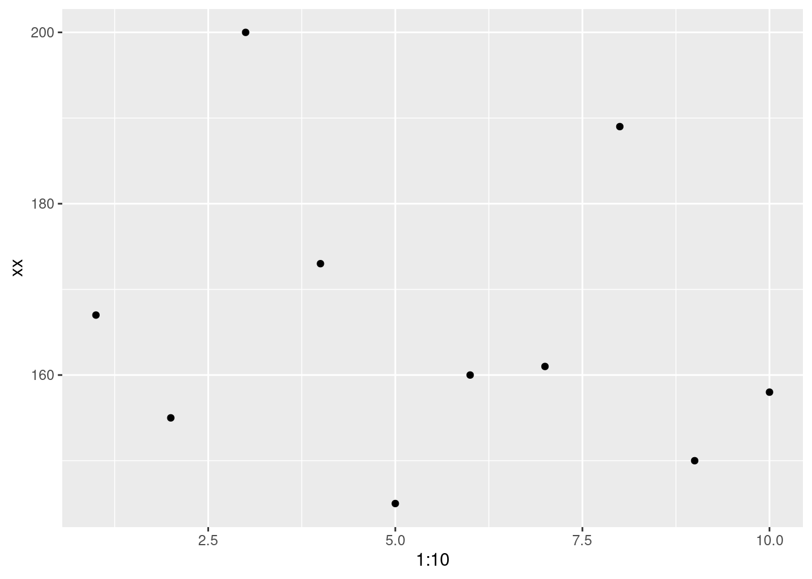
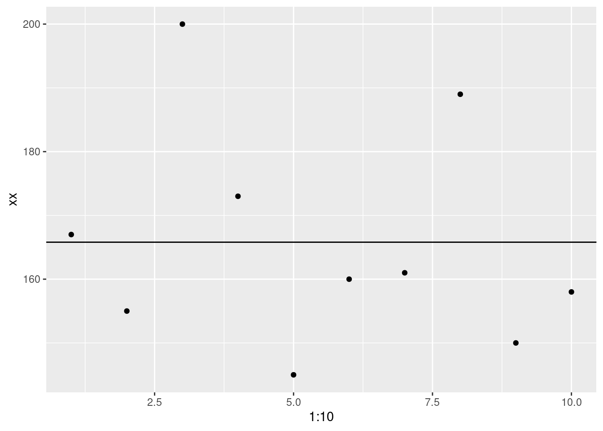
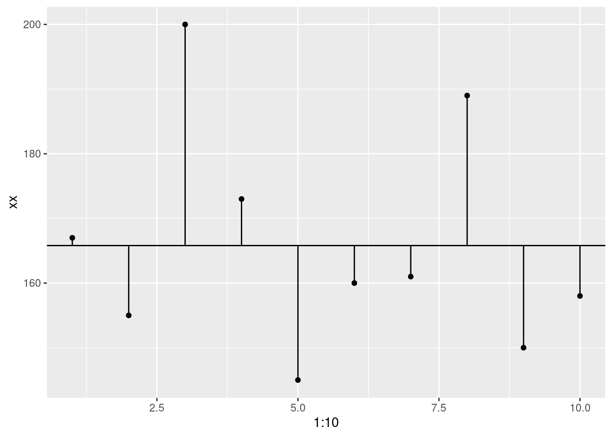

In the last lesson, we looked at data distributions and probability. We calculated the probability of a single roll of a dice. We also tried to assess whether your friend had an unfair dice by comparing the mean of his rolls to a distribution of dice roll averages. I hope this helped you gain an intuitive understanding of probability, sampling, and the normal distribution. Of course, the example is quite simplified. But let’s still make explicit some of the stuff that we did and let’s draw clear connections to stuff that you will actually do in science.
library(ggplot2)We didn’t make our hypotheses explicit, but we essentially tested a hypothesis. Our null hypothesis was that our friend’s dice was fair. The null hypothesis is the default believe about something. It could be a belief that there is no difference between two groups, or that two samples are taken from the same population, or maybe it’s a claim made by previous analyses. The alternative hypothesis is the counter to the null. It contradicts the null statement. When doing hypothesis testing you should always establish your hypotheses beforehand and make sure that they are stated in a way that the results of your analysis are unambiguous whether you reject the null hypothesis and accept the alternative or whether you fail to reject the null and fail to accept the alternative.
Note that it’s “fail to reject the null” and not “accept the null”. Just like in a US criminal trial (I’m not sure about Austria), the jury delivers a verdict of guilty or not guilty. They don’t give a verdict of “innocent”. So “you did not commit a crime” is the null and the alternative is that you are guilty. There has to be sufficient evidence to judge someone guilty, if that burden of proof is not met, then the alternative is rejected: “not guilty”.
In the dice example our hypotheses could be stated as following:
H0 (Null hypothesis): The mean of our friends dice rolls is equal to the true population mean of dice rolls.
HA (Alternative hypothesis): The mean of our friend’s dice rolls is greater than the true population mean of dice rolls.
Remember that we thought that our friend was cheating by having a dice that would produce higher numbers more often. So, our test would need to be one-sided. One-sided tests only look at one edge of the distribution, remember, we didn’t need to consider the part of the curve that was less than the mean even though it was more than two standard deviations from the mean. If we weren’t sure if our friend was cheating by rolling more high numbers or by rolling more low numbers, we would use a two-sided test.
We performed a hypothesis test with the dice rolls, but normally, there are some assumptions that we have to check. The first, and perhaps most important, is the assumption of independence. The observations in your data should be independent from one another. This is why sampling should be random. If you decide to do an analysis and get all of your friends and family to participate it’s likely that any inferences that you draw about the general population will be invalid. Your sample should be an accurate reflection of your population, at least as much as possible.
If you have two measurements for a subject, you cannot treat these as independent data points. For example, if you want to know how many sodas per day Americans drink vs Austrians, you cannot increase your sample size by asking me to fill out a survey on Monday and then again on Thursday. You can have multiple measurements per individual but your statistics should reflect this. You could either directly test this by using a paired test (as in within subject tests) or you could calculate an average so that each individual only have one data point. How you deal with multiple observations depends on the research question but it has to be dealt with.
This assumption is a bit tricky. The normal distribution is used in a lot of statistical testing, as such deviations from normality may give erroneous inferences. I’ll come back to this point a bit later because it’s worth exploring in more detail and the when and how of dealing with the normality assumption is not straight-forward.
For the test that we ran (more or less we performed a z-test), you have to know the population standard deviation. In our case, we didn’t really violate the assumption because we could approximate the population statistics for dice rolls by simulating repeated sampling. We could do this because there is a clear understanding of the probabilities associated with a single roll of the die, the law of large numbers, and the central limit theorem. We calculated the standard deviation by taking the standard deviation of our sampling distribution.
As is often the case, the examples that we use to learn statistics are very different than the data that we encounter in the real world. We almost never know the true population standard deviation. It is quite strange that we spend so much time testing two means but then just assume the standard deviation. The good news is that we don’t. First, let’s spend a bit of time getting to know our friend the standard deviation.
A lot of the statistics we talk about are pretty easy to comprehend. Everyone understands the median (even if they don’t know the term), interquartile range isn’t too difficult to grasp, range is easy, the mean might take a second but it’s straight-forward. But what exactly is the standard deviation?
You’ll remember that in the first class, I gave a definition but it was a little “hand-wavy”. There’s not really a single phrase that describes it (to the exclusion of other similar terms). It’s a measure of spread or variation in the data, but unlike range or interquartile range, it’s not intuitive. One reason that the standard deviation is less intuitive is that it cannot be understood without a firm grasp on the mean and what the mean means (pun definitely intended)
In the first class I mentioned that statistics are models of reality, numerical simplifications that help us make generalizations. An important thing about models is that they have error; because they are simplifications, they deviate from the real world.
\[model + error = outcome\]
The mean is a model. On average, dogs weigh more than cats (domestic ones, at least), Austrians are taller than Americans, Steph Curry is a better 3-point shooter than LeBron James, etc. But we are not surprised if we find that a fat cat weighs more than a small dog; there are plenty of Americans who are taller than Austrians; LeBron shoots better than Steph in some games. There’s a famous quote (attributed to statistician George Box, though the idea had been expressed prior) that “All models are wrong, but some are useful”.
This is where the standard deviation gets its time to shine. The standard deviation is a numerical description of the error in the mean as a model. Now here is where you are going to start to hate me. Because there is a term called the standard error of the mean. And it’s related but not exactly the same. We’re also going to go through step by step how to calculate the standard deviation. Just remember that this is going to hurt me more than it hurts you (not really, I’m broken enough that I actually enjoy writing this out).
First, let’s create some fake data:
xx <- c(167, 155, 200, 173, 145, 160, 161, 189, 150, 158)
xx## [1] 167 155 200 173 145 160 161 189 150 158Let’s check the mean and standard deviation so that we know what we should expect.
mean(xx)## [1] 165.8sd(xx)## [1] 17.24851So, we have a mean of 165.8 and a standard deviation of 17.2485104. Remember that I said the mean is a model. Let’s visualize the data.
ggplot(data.frame(xx), aes(x = 1:10, y = xx)) +
geom_point()
Now let’s visualize it with the mean (model).
ggplot(data.frame(xx), aes(x = 1:10, y = xx)) +
geom_point()+
geom_abline(intercept = mean(xx), slope = 0)
One thing you’ll notice, is that there no data point that matches perfectly with the mean. That doesn’t mean it’s useless but there is definitely error.
So, we’re going to calculate that error. How do we do that? By finding the difference between the data point and the model. This called deviance.
ggplot(data.frame(xx), aes(x = 1:10, y = xx)) +
geom_point()+
geom_abline(intercept = mean(xx), slope = 0)+
geom_segment(aes(xend = 1:10, y = mean(xx), yend = xx))
# Deviance
# subtract each point from the model
deviance <- xx - mean(xx)
deviance## [1] 1.2 -10.8 34.2 7.2 -20.8 -5.8 -4.8 23.2 -15.8 -7.8Now, we want to collapse that down to a single value, right? If we used a whole bunch of numbers we wouldn’t even need the mean in the first place. So, we’ll take the sum. This is called the sum of deviance.
# Sum of deviance
# add all of the deviance
# I'll show each step in the process commented out.
#sum(xx - mean(xx))
sum_of_deviance <- sum(deviance)
sum_of_deviance## [1] -1.136868e-13But wait. That’s basically 0!? That doesn’t seem correct. We don’t have any error? That’s because the values above and below the mean will cancel each other out. Positive 5.5 and negative 5.5 sum to 0. What should we do? Square it. So now we get the sum of squared errors
# Sum of squared errors
# square the results
#sum((xx - mean(xx))^2)
sum_of_squared_errors <- sum(deviance^2)
sum_of_squared_errors## [1] 2677.6There’s another problem (it’s a bit of ‘whack-a-mole’!). If we use the sum of squared errors, the amount of error will be tied to our sample size. Larger samples will always have bigger errors. So, we divide by the number of observations - 1. This is the variance
# Variance
# divide by n of observations - 1
# sum((xx - mean(xx))^2)/(length(xx)-1)
variance <- sum_of_squared_errors/(length(xx)-1)
variance## [1] 297.5111We’re almost there! The variance is fine, but it’s a little difficult to interpret because now we no longer have the data in the original scale. For example, if these were height data, a variance of 297.5111111 isn’t all that informative. Can we get it back to the original scale? We can. We just have to take the square root (remember that we squared the data earlier).
# Standard deviation
# sqrt(sum((xx - mean(x1))^2)/(length(xx)-1))
sqrt(variance)## [1] 17.24851Now we have the standard deviation!! Finally! Let’s check that we have the same as the R function.
sd(xx)## [1] 17.24851sqrt(variance)## [1] 17.24851Looks pretty good!
So, now we’ve worked through probability, distributions, hypothesis testing, and model error. We’re ready to start running some statistical tests.
================================================================================
Last update on 2020-11-06
sessionInfo()## R version 4.1.2 (2021-11-01)
## Platform: x86_64-pc-linux-gnu (64-bit)
## Running under: Ubuntu 20.04.3 LTS
##
## Matrix products: default
## BLAS: /usr/lib/x86_64-linux-gnu/blas/libblas.so.3.9.0
## LAPACK: /usr/lib/x86_64-linux-gnu/lapack/liblapack.so.3.9.0
##
## locale:
## [1] LC_CTYPE=en_US.UTF-8 LC_NUMERIC=C
## [3] LC_TIME=de_AT.UTF-8 LC_COLLATE=en_US.UTF-8
## [5] LC_MONETARY=de_AT.UTF-8 LC_MESSAGES=en_US.UTF-8
## [7] LC_PAPER=de_AT.UTF-8 LC_NAME=C
## [9] LC_ADDRESS=C LC_TELEPHONE=C
## [11] LC_MEASUREMENT=de_AT.UTF-8 LC_IDENTIFICATION=C
##
## attached base packages:
## [1] stats graphics grDevices utils datasets methods base
##
## other attached packages:
## [1] ggplot2_3.3.5
##
## loaded via a namespace (and not attached):
## [1] highr_0.9 bslib_0.2.5.1 compiler_4.1.2 pillar_1.6.4
## [5] jquerylib_0.1.4 tools_4.1.2 digest_0.6.28 jsonlite_1.7.2
## [9] evaluate_0.14 lifecycle_1.0.1 tibble_3.1.5 gtable_0.3.0
## [13] pkgconfig_2.0.3 rlang_0.4.12 DBI_1.1.1 yaml_2.2.1
## [17] xfun_0.27 withr_2.4.2 stringr_1.4.0 dplyr_1.0.7
## [21] knitr_1.36 generics_0.1.1 sass_0.4.0 vctrs_0.3.8
## [25] grid_4.1.2 tidyselect_1.1.1 glue_1.4.2 R6_2.5.1
## [29] fansi_0.5.0 rmarkdown_2.9 farver_2.1.0 purrr_0.3.4
## [33] magrittr_2.0.1 scales_1.1.1 ellipsis_0.3.2 htmltools_0.5.1.1
## [37] assertthat_0.2.1 colorspace_2.0-2 labeling_0.4.2 utf8_1.2.2
## [41] stringi_1.7.5 munsell_0.5.0 crayon_1.4.2================================================================================
Copyright © 2021 Dan C. Mann. All rights reserved.